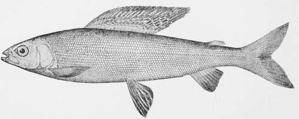

The American Grayling
Description
This section is from the book "American Game Fishes", by W. A. Perry. Also available from Amazon: American Game Fishes: Their Habits, Habitat, and Peculiarities; How, When, and Where to Angle for Them.
The American Grayling
"Thegraylynge, by a nother name callyd ombre, is a delycyous fyffhe to manys mouthe. And ye maye take hym lyke as ye doo the troughte * * * And yf ye fe ony tyme of the daye the troughte or graylynge lepe, angle to hym vvyth a dubbe* acordynge to the fame moneth."-Dame Juliana Berners.
THE very peculiar history of "The rise and fall of the Grayling," as it has not inaptly been termed by Mr. W. David Tomlin, has already been written by so many famous anglers and facile pens, that it seems to me almost a work of supererogation to attempt a new one in my own words.
For much of the technical and historical portions of this paper, I have freely drawn upon the writings of others-scientists and anglers. Where practicable, I have given the proper credit, but I may here say that I am largely indebted to the works of Professor G. Brown Goode, to the "Forest and Stream," and to the "American Angler."
The following technical description is taken from Goode's "American Fishes."
"Two species of the genus Thvmallus occur in North America, one, the Arctic Grayling, T. signifer, the other the Michigan Grayling, T. tricolor, the diagnostic characters of which are thus defined by Bean:
Species Of Grayling
A. Gill-rakers 22, pyloric coeca 19, maxilla one-third head; mandible equal to anal base; eye nearly equal to interorbital space; dorsal when laid back not reaching adipose fin. t. tricolor.
Aa. Gill-rakers 18; pyloric coeca 18; 3-10 head; mandible much shorter than anal base; eye much less than interorbital space; dorsal when laid back reaching end of adipose fin. t. signifer.
To the anglers and ichthyologists of the United States the Grayling is comparatively a new fish. The Arctic species was described in 1819, by Sir John Richardson, of the Franklin expedition, and called Thymallus signifer (standard-bearer); Thymallus having reference to the odor resembling that of thyme or cucumbers, which causes it in England to be known as "the flower of fishes"; but which appears to be peculiar to the Grayling of Europe.
The Esquimaux of the Mackenzie River give this fish the name of Hewluk-powak, or the fish with the wing-like fin. The Grayling is of the family Salmonidae, and is distinguished from the Trout by its smaller mouth and teeth, and by the greater size of the dorsal fin. The scales are also much larger.
This fish is more elegantly formed than the Trout; it is of a beautiful silvery gray, the fins olive brown, the pectorals shading into blue near the ends. Its magnificent dorsal is dotted with purple or reddish spots, surrounded in life by greenish tints, and is about one-fourth the length of the fish. It rises with a gracefully curving outline to a height of two or more inches in a Grayling weighing a pound, and its apparent use is to enable the fish to rise and descend rapidly.
In Michigan waters the weight of the fish seldom exceeds a pound and a half, and they are not often taken above fifteen inches in length.
The Jordan, the Boyne and the Boardman were once noted as Grayling streams, but. as far as can be learned, the Trout were then new-comers, having as is believed migrated within forty years from the streams of the upper peninsula, where they have always been numerous, to those of the lower, where they are said to have been previously unknown.
Grayling- Thymallus tricolor.
I first saw the Grayling caught near the mouth of the Cedar, in the Intermediate River, where now stands the village of Bellaire.
Ten years ago they were fairly numerous in Cedar River, but none of the streams I have mentioned now contains more than an occasional Grayling.
It is said that Mr. Fred Mather hatched the first Grayling, in 1874; and since that time many attempts have been made to propagate this fish, notably those of the Michigan Fish Commission, which, I regret to say, have proved a failure. I cannot learn that others have been more successful. In many countries of Europe, the Trout and Grayling are found side by side, and the same is true in the streams forming the head-waters of the Missouri. In Michigan, however, it has been observed that wherever the Trout have found their way into a Grayling stream there has ensued a serious diminution in the numbers of the latter fish. The favorite theory has been that the Trout devour the spawn and the young of :he Grayling; but some accurate observers hold to the opin-on that the latter, being in its habits a local fish, and not suven to migration, like the Trout, has simply been "caught out" by anglers. In the words of Mr. J. B. Battelle, "it is the fishermen and not the fish, who are responsible for the disappearance of the Grayling."
In 1854 or 1855, Mr. Wright L. Coffinberry, a surveyor in the employ of the General Government, found Grayling abundant in the Muskegon and neighboring streams, and :alled the attention of Michigan scientists to the fact. It is said that the fish were at that time so numerous that they were taken in wagon loads by the settlers, and salted as provisions. They were locally known as "Michigan Trout." Soon after, Dr. Parker, of Grand Rapids, succeeded in procuring an imperfectly preserved specimen, and pronounced it a true Thymallus, a decision confirmed in 1865 by Professor Cope, and later by Agassiz, to whom specimens had been sent by Mr. Charles Hallock.
Slowly the Grayling worked its way to public notice. Genio C. Scott, writing in 1869, devotes less than seven lines of his book to this fish, though he gives it a good character.
Later, Fred Mather writes: "There is no species sought for by anglers that surpasses the Grayling in beauty. They are more elegantly formed and more graceful than the Trout, and their great dorsal fin is a superb mark of loveliness. The sun's rays lighting up the delicate olive-brown tints of the back and sides, the bluish-white of the abdomen, and the mingling of tints of rose, pale blue, and purplish-pink on the fins, display a combination of colors equaled by no fish outside of the tropics.
Continue to: